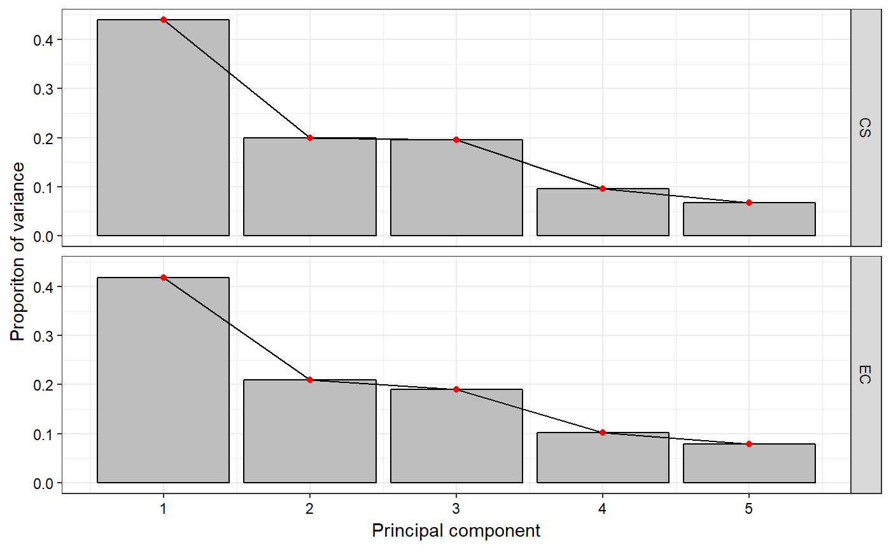
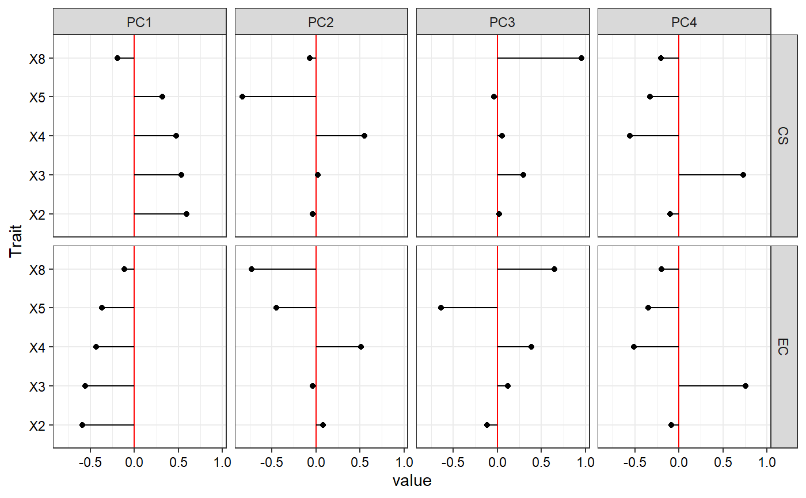

Compute Principal Component Analysis Statistics (Mardia et al. 1979) to compare the probability distributions of quantitative traits between entire collection (EC) and core set (CS).
pca.evaluate.core( data, names, quantitative, selected, center = TRUE, scale = TRUE, npc.plot = 6 )
| data | The data as a data frame object. The data frame should possess one row per individual and columns with the individual names and multiple trait/character data. |
|---|---|
| names | Name of column with the individual names as a character string |
| quantitative | Name of columns with the quantitative traits as a character vector. |
| selected | Character vector with the names of individuals selected in
core collection and present in the |
| center | either a logical value or numeric-alike vector of length
equal to the number of columns of |
| scale | either a logical value or a numeric-alike vector of length
equal to the number of columns of |
| npc.plot | The number of principal components for which eigen values are to be plotted. The default value is 6. |
A list with the following components.
A data frame of importance of principal components for EC
A data frame with eigen vectors of principal components for EC
A data frame of importance of principal components for CS
A data frame with eigen vectors of principal components for CS
The scree plot of principal components
for EC and CS as a ggplot object.
A plot of
the eigen vector values of principal components for EC and CS as specified
by npc.plot as a ggplot2 object.
Mardia KV, Kent JT, Bibby JM (1979). Multivariate analysis. Academic Press, London; New York. ISBN 0-12-471250-9 978-0-12-471250-8 0-12-471252-5 978-0-12-471252-2.
#################################### # Use data from R package ccChooser #################################### library(ccChooser) data("dactylis_CC") data("dactylis_EC") ec <- cbind(genotypes = rownames(dactylis_EC), dactylis_EC[, -1]) ec$genotypes <- as.character(ec$genotypes) rownames(ec) <- NULL ec[, c("X1", "X6", "X7")] <- lapply(ec[, c("X1", "X6", "X7")], function(x) cut(x, breaks = 4)) ec[, c("X1", "X6", "X7")] <- lapply(ec[, c("X1", "X6", "X7")], function(x) factor(as.numeric(x))) head(ec)#> genotypes X1 X2 X3 X4 X5 X6 X7 X8 #> 1 ASTA 2 16.67014 23.51726 0.8068824 2.029226 2 3 67.36377 #> 2 BARAULA 3 14.52438 23.32746 0.7897424 2.949226 3 4 67.93947 #> 3 BRAULA 3 15.15014 22.84370 0.7818024 3.369226 2 3 67.40187 #> 4 BRUDZYNSKA 2 14.45010 22.79556 0.7910424 3.269226 2 2 67.40187 #> 5 D120001 2 13.85014 21.44856 0.7707224 3.269226 2 3 67.40187 #> 6 D120002 2 15.15014 22.50696 0.7928824 3.169226 2 2 67.40187core <- rownames(dactylis_CC) quant <- c("X2", "X3", "X4", "X5", "X8") qual <- c("X1", "X6", "X7") #################################### # EvaluateCore #################################### pca.evaluate.core(data = ec, names = "genotypes", quantitative = quant, selected = core, center = TRUE, scale = TRUE, npc.plot = 4)#> $`EC PC Importance` #> PC1 PC2 PC3 PC4 PC5 #> Standard deviation 1.446234 1.024528 0.976549 0.7159217 0.6265446 #> Proportion of Variance 0.418320 0.209930 0.190730 0.1025100 0.0785100 #> Cumulative Proportion 0.418320 0.628250 0.818980 0.9214900 1.0000000 #> #> $`EC PC Loadings` #> PC1 PC2 PC3 PC4 PC5 #> X2 -0.5915916 0.07902785 -0.1178887 -0.08712682 -0.78885051 #> X3 -0.5583083 -0.03899603 0.1187180 0.75795644 0.31333556 #> X4 -0.4342804 0.51426207 0.3826416 -0.50889460 0.37622705 #> X5 -0.3695821 -0.44660238 -0.6401239 -0.34639330 0.36634466 #> X8 -0.1145460 -0.72685263 0.6448527 -0.19735479 -0.06148577 #> #> $`CS PC Importance` #> PC1 PC2 PC3 PC4 PC5 #> Standard deviation 1.483265 0.999083 0.9905458 0.6954636 0.5804368 #> Proportion of Variance 0.440020 0.199630 0.1962400 0.0967300 0.0673800 #> Cumulative Proportion 0.440020 0.639650 0.8358800 0.9326200 1.0000000 #> #> $`CS PC Loadings` #> PC1 PC2 PC3 PC4 PC5 #> X2 0.5954071 -0.03487075 0.02194213 -0.09999747 0.79611143 #> X3 0.5331109 0.02476343 0.29292311 0.72846022 -0.31419938 #> X4 0.4717377 0.55159363 0.05146896 -0.55723453 -0.40006073 #> X5 0.3199255 -0.83023789 -0.03608009 -0.32760753 -0.31579148 #> X8 -0.1907727 -0.06797295 0.95381537 -0.20373807 0.08782077 #> #> $`Scree Plot`#> #> $`PC Loadings Plot`#>